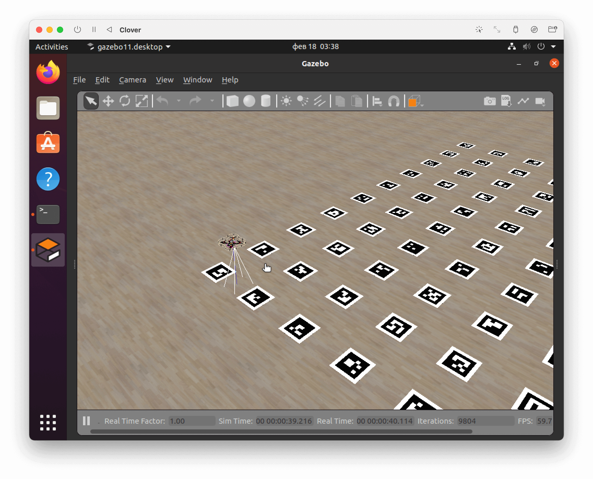
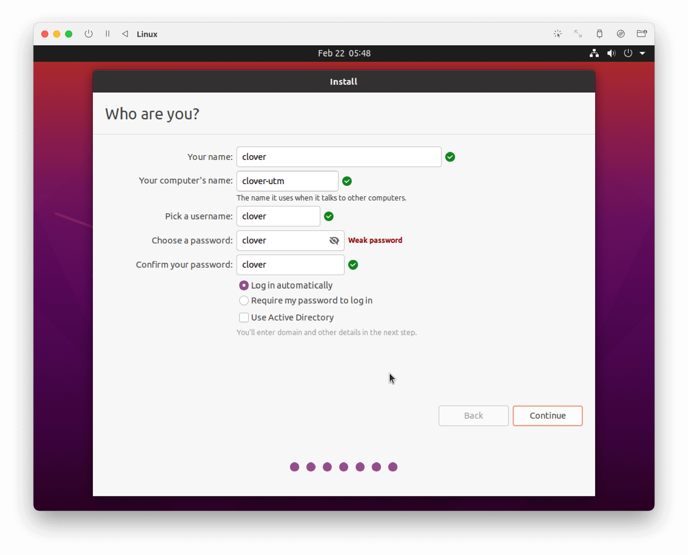

Для архитектуры ARM64, которую используют компьютеры с чипом M1 (Apple Silicon), готовый образ с симулятором не выпускается, поэтому возможна только ручная установка симулятора.
В качестве виртуальной машины рекомендуется использовать бесплатное приложение UTM. Также возможно использование VMware Fusion Public Tech Preview с поддержкой M1.

Создайте новую виртуальную машину в UTM, выбирая следующие настройки:
focal-desktop-arm64.iso.Запустите созданную виртуальную машину.
Выберите пункт Install Ubuntu и установите Ubuntu с помощью мастера установки.
Введите параметры учетной записи по желанию, например:

Завершите установку и запустите установленную систему (для этого потребуется извлечь виртуальный CD-диск или выбрать Boot from next volume в меню загрузки).
Если при запуске виртуальной машины вместо изображения вы видите черный фон, попробуйте запустить машину с отключенной поддержкой GPU.
В настройках виртуальной машины выберите Display, в пункте Emulated Display Card выберите virtio-ramfb. Запустите машину. При успешном запуске поменяйте настройку обратно на virtio-ramfb-gl (GPU Supported) и снова запустите машину.
git cloneПри осуществлении команды git clone может возникнуть подобная ошибка:
on git clone if error: RPC failed; curl 56 GnuTLS recv error (-54): Error in the pull function.
fatal: the remote end hung up unexpectedly
fatal: early EOF
fatal: index-pack failed
В этом случае поменяйте типа сетевой карты на Bridged. В настройках виртуальной машины выберите Network, в пункте Network Mode выберите Bridged (Advanced).
В дальнейшем, при возникновении проблем с сетью измените тип сети обратно на Shared Network.